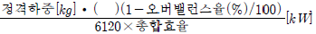
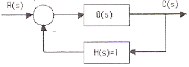
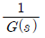
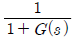
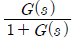
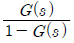
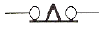
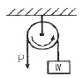
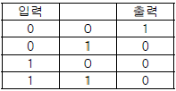

승강기기능사 (2012-10-20 기출문제)
1과목: 승강기개론
1. 에스컬레이터의 적재하중 산출과 관계가 없는 것은?
- 스텝면의 수평투영면적
- 층고
- 스텝폭
- 정격속도
(정답률: 50%)

2. 엘리베이터 조속기의 기능 및 구조에 관한 설명으로 옳지 않은 것은?
- 조속기 로프는 카와 같은 속도로 움직인다.
- 카의 과속을 검출하여 전원을 끊고 브레이크를 건다.
- 고속형 엘리베이터에는 플라이볼형 조속기가 일반적으로 사용된다.
- 카의 정격속도가 1.1배 이상이면 과속스위치가 작동하여 전원을 끊고 브레이크를 건다.
(정답률: 68%)
3. 기계실 위치에 의한 엘리베이터 분류에서 기계실을 승강로의 아래쪽 방향에 설치하는 방식은?
- 기어드 방식
- 횡인구동 방식
- 베이스먼트 방식
- 사이드머신 방식
(정답률: 87%)
4. 승강장 도어구조에 해당되지 않는 것은?
- 착상 스위치함
- 도어 스위치
- 행거 롤러
- 도어 가이드 슈
(정답률: 66%)
5. 엘리베이터 비상정지장치에 관한 설명 중 옳은 것은?
- F.W.C.형 비상정지장치의 동작곡선은 정지력이 정지 거리에 비례하여 정지할 때까지 커진다.
- F.G.C.형 비상정지장치는 레일을 죄는 힘이 동작 개시후 부터 정지시 까지 일정하다.
- 즉시작동형 비상정지장치는 정지력이 거리에 비례하여 커지다가 일정하게 된다.
- 슬랙로프 세이프티는 고속 대형 엘리베이터에 주로사용한다.
(정답률: 57%)
6. 에스컬레이터 비상정지스위치에 관한 설명 중 옳은 것은?
- 비상정지스위치는 승객의 안전을 위하여 하부 승강구에만 설치한다.
- 어린이의 장난을 방지하기 위해 비상정지스위치의 위치 명시는 식별이 어렵게 한다.
- 비상정지스위치는 오조작을 방지하기 위하여 덮개를 씌워 보호한다.
- 색상은 청색으로 하며 버튼 또는 버튼주변에 “정지”표시를 하여야 한다.
(정답률: 71%)
7. 엘리베이터용 전동기의 출력을 계산하고자 한다. 다음 식의 ( )안에 알맞은 것은?

- 정격속도[m/min]
- 균형추 중량[kg]
- 정격전압[V]
- 회전속도[rpm]
(정답률: 69%)
8. 간접식 유압엘리베이터의 특징이 아닌 것은?
- 부하에 의한 카 바닥의 빠짐이 비교적 작다.
- 비상정지장치가 필요하다.
- 실린더 설치를 위한 보호관이 필요하지 않다.
- 실린더의 점검이 용이하다.
(정답률: 53%)
9. 수평보행기 디딤판의 속도에 관한 기준으로 맞는 것은?
- 경사도가 6° 이하의 것은 속도 60m/min 이하
- 경사도가 6° 이하의 것은 속도 50m/min 이하
- 경사도가 8° 이하의 것은 속도 50m/min 이하
- 경사도가 8° 이하의 것은 속도 60m/min 이하
(정답률: 43%)
10. 승객용 엘리베이터에서 고장이나 정전시 카내에서 카도어를 억지로 여는데 필요한 힘은?
- 1kg 이상 10kg 이하
- 5kg 이상 30kg 이하
- 40kg 이상 60kg 이하
- 60kg 이상 70kg 이하
(정답률: 75%)
11. 엘리베이터 완충기에 대한 설명으로 적합하지 않는 것은?(관련규정 개정전 문제로 여기서는 기존정답인 4번을 누르면 정답 처리 됩니다. 자세한 내용은 해설을 참고하세요.)
- 정격속도 60m/min 이하의 엘리베이터에 스프링 완충기를 사용하였다.
- 정격속도 60m/min 초과 엘리베이터에 유입완충기를 사용하였다.
- 유입완충기의 플런저를 완전히 압축한 상태에서 완전히 구할 때까지의 시간은 90초 이하이다.
- 유입 완충기에서 최소적용중량은 카 자중 + 적재하중으로 한다.
(정답률: 77%)
12. 스트랜등의 내층 ㆍ 외층소선을 같은 직경으로 구성하고 소선간의 틈새에 가는 소선을 넣은 와이어로프는?
- 실형
- 필러형
- 워링톤형
- 헬테레스형
(정답률: 57%)
13. 1:1 로핑에 비하여 2:1 로핑의 단점이 아닌 것은?
- 적재용량이 줄어든다.
- 로프의 수명이 짧아진다.
- 로프의 길이가 길어진다.
- 총합효율이 낮아진다.
(정답률: 54%)
14. 엘리베이터의 구조 중 사람이나 화물을 싣는 카에 설치되어 있지 않은 것은?
- 카 천장
- 문 개폐장치
- 운전스위치
- 카 완충기
(정답률: 50%)
15. 엘리베이터 정격속도 90m/min의 피트 깊이는 최소 몇 [m] 이상인가?
- 1.5
- 1.8
- 2.1
- 2.4
(정답률: 61%)
2과목: 안전관리
16. 엘리베이터를 설치할 때 건축물 전원이 300[V] 이하의 저압일 때 접지는 제 몇 종 접지공사를 하는가?(오류 신고가 접수된 문제입니다. 반드시 정답과 해설을 확인하시기 바랍니다.)
- 제1종
- 제2종
- 제3종
- 특별 제3종
(정답률: 69%)
17. 기동과 주행은 고속권선으로 하고 감속과 착상은 저속으로 하며, 착상지점에 근접해지면 모든 접점을 끊고 동시에 브레이크를 거는 제어방식은?
- VVVF 제어방식
- 교류1단 제어방식
- 교류2단 제어방식
- 교류귀환 제어방식
(정답률: 49%)
18. 로프식 엘리베이터의 균형추 무게를 계산하는 식은? (단, 오버밸런스는 50%로 한다.)
- 카하중 + 카하중의 50%
- 카하중 + 정격하중의 50%
- 정격하중의 150%
- 정격하중의 50%
(정답률: 77%)
19. 사다리를 사용하는 작업에서 안전수칙에 어긋나는 행위는?
- 위험 및 사용금지의 표찰이 붙어서 결함이 있는 사다리를 사용 할 때는 주의하면서 사용한다.
- 사다리 밑 끝이 불안전하거나 3m 이상의 높은 곳이면 다른 사람으로 하여금 붙들게 하고 작업한다.
- 사다리를 문앞에 설치할 때는 문을 완전히 열어놓거나 잠궈야 한다.
- 사다리 설치시에는 사다리의 밑바닥과 사다리 길이를 고려하여 어느 정도 벽에서 떨어지게 한다.
(정답률: 69%)
20. 로프식 승강기로 짝지어진 것은?
- 직접식과 간접식
- 견인식과 권동식
- 견인식과 직접식
- 권동식과 간접식
(정답률: 64%)
21. 카 내에 갇힌 사람이 외부와 연락할 수 있는 장치는?
- 챠임벨
- 리미트스위치
- 위치표시램프
- 인터폰
(정답률: 87%)
22. 로프식 엘리베이터에 대하여 매월 1회 이상 정기적으로 실시하는 자체검사 항목이 아닌 것은?
- 수전반, 제어반
- 고정 도르래
- 권상기의 브레이크
- 카 도어 스위치
(정답률: 56%)
23. 사고발생빈도에 영향을 미치지 않는 것은?
- 작업시간
- 작업자의 연령
- 작업숙련도 및 경험년수
- 작업자의 거주지
(정답률: 84%)
24. 전기안전기준으로 옳지 않은 것은?
- 전기코드는 물이나 습기에 안전한 것이어야 한다.
- 전기위험설비에는 위험 표시를 해야 한다.
- 전기설비의 감전, 누전, 화재, 폭발방지를 위해 매년 1회 이상 점검한다.
- 감전의 위험이 있는 작업을 할 때에는 통전시간을 명시하고 관계 근로자에게 미리 주지시킨다.
(정답률: 70%)
25. 스패너를 힘주어 돌릴 때 지켜야 할 안전사항이 아닌 것은?
- 스패너 자루에 파이프를 끼워 힘껏 조인다.
- 주위를 살펴보고 조심성 있게 조인다.
- 스패너를 밀지 않고 당기는 식으로 사용한다.
- 스패너를 조금씩 여러 번 돌려 사용한다.
(정답률: 68%)
26. 감전사고의 원인이 되는 것과 관계없는 것은?
- 콘덴서의 방전코일이 없는 상태
- 전기기계기구나 공구의 절연파괴
- 기계기구의 빈번한 기동 및 정지
- 정전작업시 접지가 없어 유도전압이 발생
(정답률: 71%)
27. 산업재해의 간접원인에 해당되지 않는 것은?
- 기술적요인
- 인적원인
- 교육적원인
- 정신적원인
(정답률: 55%)
28. 다음 중 사고방지를 위한 5단계 중 가장 먼저 조치해야 할 사항은?
- 사실의 발견
- 안전조직
- 분석평가
- 대책의 선정
(정답률: 47%)
29. 가이드레일에 관한 설명으로 맞지 않은 것은?
- 레일의 가장 좋은 규격은 길이 5m이다.
- 대용량 엘리베이터에는 13K, 18K, 24K가 사용되고 있다.
- 레일규격의 호칭은 1m당의 중량으로 한다.
- 비상정지장치가 작동할 때 안전하게 물려야 한다.
(정답률: 50%)
30. 권상기의 브레이크 기능을 설명한 것으로 옳지 않은 것은?
- 승객용의 경우 카에 125% 부하상태에서 정격 속도로 하강 중에도 안전하게 감속정지 시켜야 한다.
- 브레이크는 전기가 입력되는 즉시 브레이크 슈가 작동하여 드럼을 잡아 미끄러지지 않도록 설계되어야 한다.
- 브레이크는 전동기, 카, 균형추 등 모든 장치의 관성을 제지하는 역할을 해야 한다.
- 정지후에는 부하에 의한 불균형 역구동이 되어 움직이는 일이 없어야 한다.
(정답률: 38%)
3과목: 승강기보수
31. 에스컬레이터의 구동 체인이 규정값 이상으로 늘어져 있을 경우에 나타나는 현상은?
- 브레이크가 작동하지 않는다.
- 안전회로가 차단되어 구동되지 않는다.
- 상승만 가능하다.
- 하강만 가능하다.
(정답률: 73%)
32. 조속기의 보수 점검항목에 해당되지 않는 것은?
- 조속기 스위치의 접점 청결상태
- 세이프티 링크 스위치와 캠의 간격
- 운전의 윤활성 및 소음 유무
- 조속기 로프와 클립 체결상태
(정답률: 54%)
33. 에스컬레이터 구동장치 보수점검사항에 해당 되지 않는 것은?
- 구동체인의 이완 여부
- 브레이크 작동상태
- 스텝과 핸드레일 속도차이
- 각부의 볼트 및 너트의 풀림 상태
(정답률: 46%)
34. 가이드 레일에 대한 점검사항이 아닌 것은?
- 세이프티 링크 스위치와 캠의 간격
- 브래킷 용접부의 균열 유무
- 이음판 취부의 볼트, 너트 이완 유무
- 가이드 레일의 급유 상태
(정답률: 51%)
35. 에스컬레이터 디딤판 체인 및 구동 체인의 안전율로 알맞은 것은?(관련 규정 개정전 문제로 여기서는 기존 정답인 4번을 누르면 정답 처리됩니다. 자세한 내용은 해설을 참고하세요.)
- 5 이상
- 7 이상
- 8 이상
- 10 이상
(정답률: 65%)
36. 승강기의 가변전압 가변주파수 제어에서 인버터가 제어하는 방식은?(오류 신고가 접수된 문제입니다. 반드시 정답과 해설을 확인하시기 바랍니다.)
- PAM
- PWM
- PSM
- IGBT
(정답률: 51%)
37. 에스컬레이터 및 수평보행기의 비상정지스위치에 관한 설명으로 옳지 않은 것은?
- 상하 승강장의 잘 보이는 곳에 설치한다.
- 색상은 적색으로 하여야 한다.
- 장난 등에 의한 오조작 방지를 위하여 잠금장치를 설치하여야 한다.
- 버튼 또는 버튼 부근에는 “정지” 표시를 하여야 한다.
(정답률: 81%)
38. 유압식 엘리베이터의 부품 및 특징에 대한 설명으로 옳지 않은 것은?
- 역저지밸브 : 정전이나 그 외의 원인으로 펌프의 토출 압력이 떨어져 실린더의 기름이 역류하여 카가 자유 낙하하는 것을 방지하는 역할을 한다.
- 스톱밸브 : 유압파워유니트와 실린더 사이의 압력배관에 설치되며 이것을 닫으면 실린더의 기름이 파워 유니트로 역류하는 것을 방지한다.
- 스트레이너 : 역할은 필터와 같으나 일반적으로 펌프 출구쪽에 붙인 것을 말한다.
- 사이렌서 : 자동차의 머플러와 같이 작동유의 압력맥동을 흡수하여 진동, 소음을 감소시키는 역할을 한다.
(정답률: 58%)
39. 로프식 엘리베이터의 경우 기계실에서 검사하는 항목과 관계가 없는 것은?
- 전동기 및 제동기
- 권상기의 도르래
- 브레이크 라이닝
- 인터록장치
(정답률: 55%)
40. 승강장 문의 로크 및 스위치 검사시 적합하지 않은 것은?
- 승강장 문은 외부에서 열 수 없도록 로크장치의 설치 상태가 견고하여야 한다.
- 승강장 문이 열려 있거나 닫혀 있지 않은 경우 도어 스위치는 열려 있어야 한다.
- 승강장 문의 인터록장치는 로크가 걸린 후에 도어 스위치를 닫아야 한다.
- 승강장 문의 도어스위치가 확실히 열리기 전에 로크가 벗겨져야 한다.
(정답률: 48%)
41. 로프식 엘리베이터 정격속도 60m/min의 꼭대기틈새는 몇[m] 이상이어야 하는가?
- 1.2
- 1.4
- 1.6
- 1.8
(정답률: 44%)
42. 기계식 주차장치의 종류에서 순환방식에 속하지 않는 것은?
- 멀티순환방식
- 수평순환방식
- 수직순환방식
- 다층순환방식
(정답률: 66%)
43. 로프의 미끄러짐 현상을 줄이는 방법으로 틀린 것은?
- 권부각을 크게 한다.
- 가감속도를 완만하게 한다.
- 균형체인이나 균형로프를 설치한다.
- 카 자중을 가볍게 한다.
(정답률: 67%)
44. 전동기에 대한 점검을 하고자 할 때, 계측기를 사용하지 않으면 측정이 불가능한 것은?
- 전동기의 회전속도
- 이상음 발생 유무
- 전동기 본체의 파손
- 이상발열 유무
(정답률: 70%)
45. 엘리베이터의 피트에서 행하는 점검사항이 아닌 것은?
- 화이날 리미트스위치 점검
- 이동케이블 점검
- 배수구 점검
- 도어로크 점검
(정답률: 46%)
4과목: 기계,전기기초이론
46. 오일이 실린더로 들어가는 곳에 설치되어 만일 파이프가 파손되었을 때 자동적으로 밸브를 닫아 카가 급격히 떨어지는 것을 방지하는 밸브는?
- 럽쳐 밸브
- 체크 밸브
- 스톱 밸브
- 사이런서
(정답률: 45%)
47. 다음 그림과 같은 제어계의 전체 전달함수는?(단, H(s)=1이다.)





(정답률: 67%)
48. 정현파 교류에서 시간의 변화에 따라 시시각각 다르게 나타나는 값은?
- 최대값
- 실효값
- 순시값
- 파고값
(정답률: 65%)
49. 직류기의 구조에서 계자에 해당하는 것은?
- 자극편
- 정류자
- 전기자
- 공극
(정답률: 39%)
50. 5[Ω]의 저항에 5[A]의 전류가 흐른다면 전압[V]은?
- 0.02
- 0.5
- 25
- 50
(정답률: 77%)
51. 직류전위차계에 대한 설명으로 옳은 것은?
- 전압계를 회로에 병렬로 접속하여 측정한다.
- 3[V] 이상의 직류전압을 정밀하게 측정한다.
- 배율기를 사용하여 고전압을 측정한다.
- 1[V] 이하의 직류전압을 정밀하게 측정한다.
(정답률: 51%)
52. 전압, 전류, 주파수, 회전속도 등 전기적, 기계적 양을 주로 제어하는 것으로서 응답속도가 대단히 빨라야 하는 것이 특징인 제어는?
- 프로세스제어
- 서보기구
- 프로그램제어
- 자동조정
(정답률: 39%)
53. 전자유도현상에 의한 유기기전력의 방향을 정하는 것은?
- 플레밍의 오른손법칙
- 옴의 법칙
- 플레밍의 왼손법칙
- 렌츠의 법칙
(정답률: 56%)
54. 2[Ω]의 저항 10개를 직렬로 연결했을 때는 병렬로 연결했을 때의 몇 배인가?
- 10
- 50
- 100
- 200
(정답률: 52%)
55. 다음의 접점 기호는 무엇을 나타내는가?

- 한시동작 순시복귀의 a접점
- 한시동작 순시복귀의 b접점
- 순시동작 한시복귀의 a접점
- 순시동작 한시복귀의 b접점
(정답률: 55%)
56. 어떤 물질의 대전 상태를 설명한 것으로 옳은 것은?
- 어떤 물질이 전자의 과부족으로 전기를 띠는 상태이다.
- 물질이 안정된 상태이다.
- 중성임을 뜻한다.
- 원자핵이 파괴된 것이다.
(정답률: 69%)
57. 높이를 측정할 수 있는 측정기기는?
- 다이얼 게이지
- 하이트 게이지
- 마이크로미터
- 오토콜리미터
(정답률: 61%)
58. 그림과 같은 활차장치의 옳은 설명은?

- 힘의 방향만 변환시키고, 크기는 P = W 이다.
- 힘의 방향만 변환시키고, 크기는 P = W/2 이다.
- 힘의 크기만 변환시키고, 크기는 P = W/3 이다.
- 힘의 크기만 변환시키고, 크기는 P = W/4 이다.
(정답률: 53%)
59. 캠이 가장 많이 사용되는 경우는?
- 회전운동을 직선운동으로 할 때
- 왕복운동을 직선운동으로 할 때
- 요동운동을 직선운동으로 할 때
- 상하운동을 직선운동으로 할 때
(정답률: 62%)
60. 다음 진리표에 맞는 논리회로는?

- OR
- NOR
- AND
- NAND
(정답률: 56%)